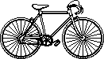

The Bike specs.
The bike that I presently carry aboard our sailboat pino, it has been modified quite a bit, notably that its bolts and nuts have been replaced with 316 marine-grade stainless steel to sustain some salt water spray.
This is the Trek District S(2014), with a travel ratio of 48/15(3.2), the tires are 700x25C(200g) and the tubes 700x18-25C with 48mm valves. I chose the aluminum wheel because it can be installed with an ilan key alone, it is made entirely of aluminum so it does not rust as much as the other less resilient lighter wheels I had. My lock is the Abus Foldable.